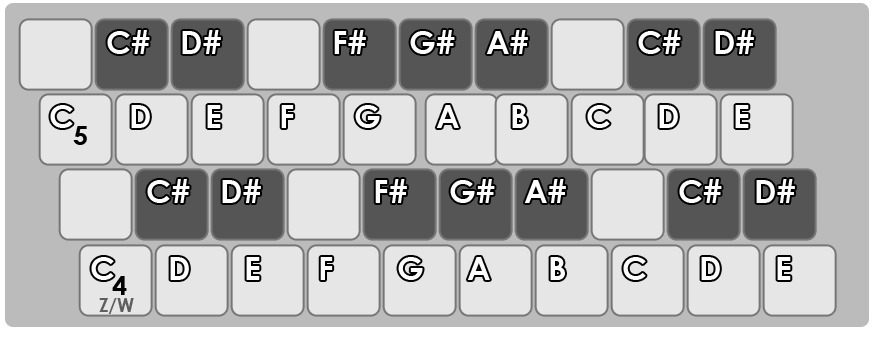

MIDI Key Finder
Find the key of an FL Studio piano roll screenshot, a MIDI file, or notes you play.
Piano
Keyboard & MIDI
Key analysis
How to find the key of an FL Studio piano roll
- Open the pattern in FL Studio’s Piano Roll. Capture the colored notes and at least one octave of the piano keyboard on the left.
- Paste the screenshot here with Ctrl+V or Command+V, or open or drop a PNG, JPEG, or WebP file.
- Check the detected notes on the piano and click keys to correct them. Compare the best guess with the other major and minor keys, and use Play to hear a candidate scale.
The detector reads the visible colored note blocks, uses their widths to estimate note lengths, and skips gray ghost notes. Screenshot detection is designed for the FL Studio layout. If you have a MIDI export, you can open that here too. Files and screenshots are processed in your browser.
Find the key of a MIDI file
Open or drop a .mid or .midi file to estimate the key of a melody, chord progression, or arrangement. Notes that play longer carry more weight, and MIDI percussion is skipped. Open Why the best guess? to see which notes influenced the result.
How to read the results
The key finder ranks major and minor keys by how well they fit the input. Match percentage measures how much of the input fits the scale, by note duration for MIDI files and by note count for manually selected notes. Relative keys such as C major and A minor share the same scale notes, so both can fit. The tool estimates one key for the input as a whole.
Find a scale from notes you play
Click or tap the online piano to select notes. Open Keyboard & MIDI to play with your computer keyboard or connect a hardware MIDI keyboard in a browser that supports Web MIDI.
Use Record notes to collect notes across a melody or chord progression. Use Held notes to see matches for the notes you’re holding. The computer keyboard mapping uses physical key positions.
